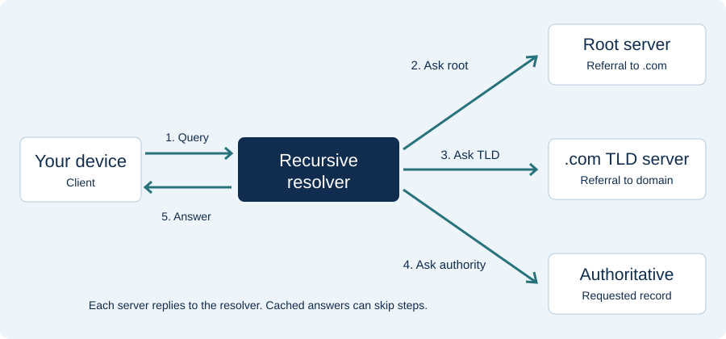

A beginner's guide to the Domain Name System
DNS Basics
Learn what happens during a DNS lookup and what the main records do.
What happens when you enter a name?
Your device sends its DNS question to a recursive resolver. This service looks for the answer for you. It first checks whether it has a saved answer it can still use. If it does not, it can ask other name servers.
- Ask the resolver. The client requests a record, such as the A record for
www.example.com. - Start at the root. A root server refers the resolver to servers for the relevant top-level domain, such as
.com. - Ask the TLD server. It provides a referral to authoritative servers for the domain.
- Ask an authoritative server. This server publishes records for its zone and can return the requested data.
- Return the result. The resolver answers the client and can cache records for later requests.

Read more: RFC 1034 · Cloudflare DNS overview
Queries and responses
A DNS query is a question about a name and a record type. The reply may give an answer, point to another server, or report an error. A records give IPv4 addresses, while AAAA records give IPv6 addresses. Once the browser has an address, it can connect to the web server. DNS finds the address; it does not download the webpage.
Common DNS records
| Type | Purpose | Example value |
|---|---|---|
| A | Maps a name to an IPv4 address. | 192.0.2.10 |
| AAAA | Maps a name to an IPv6 address. | 2001:db8::10 |
| CNAME | Makes one name an alias of another name. | www.example.com → example.com |
| MX | Identifies a mail server with a preference value; lower values are preferred. | 10 mail.example.com |
| NS | Names an authoritative name server. | ns1.example.com |
| TXT | Stores text, often used by verification and email policies. | site-verification=sample |